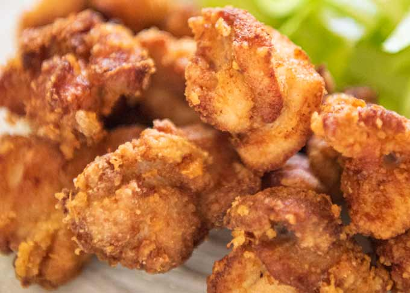

Karaage Chicken

Karaage (唐揚げ) is a japanese cooking technique in which various foods—most often chicken—are deep fried in oil. The process involves lightly coating small pieces of chicken, meat or fish with a combination of flour and potato starch or corn starch, and frying in a light oil. The foods are marinated prior to coating. The process differs from the preparation of tempura, which is not marinated and uses a batter for coating. Karaage is often served alone or with rice and shredded cabbage.
Ingredients
- 2 1/2 lb boneless, skinless chicken thighs, cut into 2-inch pieces
- 2 clove garlic, finely grated
- 2 tbsp finely grated fresh ginger
- 6 tbsp soy sauce
- 6 tbsp sake
- 2 tbsp mirin
- 1/4 tsp sesame oil
- 1/2 tsp ground black pepper
- 2 pinches cayenne pepper
- 1 tsp white sugar
- 1/2 tsp salt
- 2 cups potato starch
- 2 quart canola oil, or as needed
Instructions
- Mix garlic, ginger, soy sauce, sake, mirin, sesame oil, black pepper, cayenne, sugar, and salt in a medium bowl.
- Place chicken in the marinade and mix until thoroughly and evenly coated. Cover and refrigerate for 1 to 10 hours.
- Set up your dredging station: Place a wire rack over a foil-lined baking sheet. Add potato starch to a wide, shallow bowl.
- Remove chicken from the refrigerator. Stir to coat with marinade. Toss 2 or 3 pieces at a time in the potato starch until evenly coated. Shake off any excess starch and place chicken on the wire rack. Repeat to dredge remaining pieces.
- Tap the rack on the baking sheet to remove any loose chunks of starch, then transfer the baking sheet and rack of chicken to the refrigerator for 15 to 30 minutes.
- Heat oil in a deep fryer to 350 °F (175 °C).
- Without crowding, lower chicken carefully into the hot oil in batches. Fry, tossing occasionally, until cooked through and the outside is crunchy and browned, 3 to 4 minutes. Transfer to a paper towel-lined plate to drain. Repeat with remaining chicken and enjoy!

Home